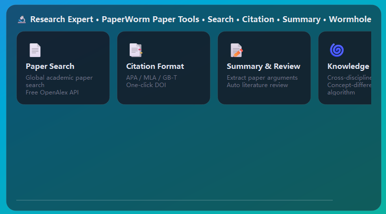

它能做什么
研究做调研
论文检索、资料整理、结构化摘要与对比，适合写综述和开题。
视频与图片创作
短视频脚本到成片、配图与封面设计，接创作类专家。
金融与投资
行情数据、公司信息、做多逻辑与风险点梳理，接炒股大师 / 金融精算师。
软件与代码
需求拆解、代码生成、报错排查、顺手跑脚本，接软件架构师 / 全栈 Codex。
增长与营销
选题、文案、活动策划、增长实验设计。
每个模块都有快捷卡
不用从零开始想提示词，直接点卡片就用现成的任务模板。
怎么用
- 1侧栏「NAVIGATION」里选一个场景（研究 / 视频 / 图片 / 金融 / 软件 / 增长）。
- 2点场景里的快捷卡片，或直接描述需求。
- 3需要跨场景时，项目空间可以把多个场景的产物汇总到一起。
技术亮点
- 场景卡片只是「任务模板 + 专家 + 工具」的组合，全部本地定义，可自行增删。
- 场景共用同一套工具注册表与记忆体系，产物互通。
- 界面支持 10 种语言，场景卡片文案跟随切换。
看一眼
